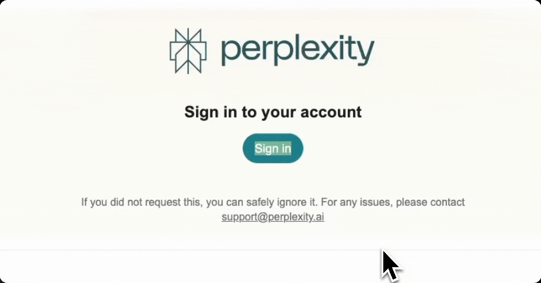

Paste link
For emails, Perplexity uses a passwordless login, sending a unique link to your email. Normally, this link signs you into Perplexity in your default browser. By pasting the link here, you sign into Perplexity within Peek. Got an idea to do this better? Open an issue on GitHub.
Copy the sign in link from your email and paste below to login.